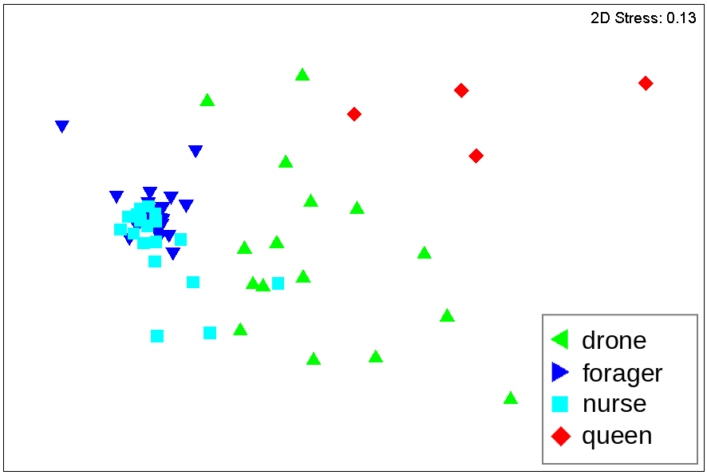

Research
In my doctoral research, I used high-throughput biological data to study the society of a model organism, the honeybee, at multiple scales of biological organization. I performed data analysis using tools from physics, statistics and machine learning, and constructed simple mathematical models to try to understand the mechanisms giving rise to our observations. Some of my projects are described at a non-technical level below.
Honeybee social networks
In a series of experiments, my collaborator Tim Gernat and others in the UIUC honeybee lab tracked individual barcoded honeybees living inside a glass-walled hive at high spatiotemporal resolution over the course of about 10 days. Using these data, we studied the network of interactions formed when bees exchange liquid food among each other – an important social interaction in honeybee colonies.
We made one especially striking discovery about the structure of these social interactions and how that might affect processes – such as information or disease spreading – that occur via these interactions. We found that honeybee interactions follow bursty temporal patterns, just like other human communication networks reported in the literature. However, unlike in human networks, we found that the speed of spreading on the honeybee networks, measured using computer simulations, is fast relative to appropriate statistical null models. This finding opens a new avenue for exploring whether honeybee networks are perhaps optimized for communication at the expense of lower resilience to epidemics.
Figure 1: Bees are barcoded to track their movements and interactions.

Figure 2: A sample visualization of the tracking data, where bees are coloured by their inferred role in the society.
Interindividual variation and behavioural plasticity in foraging
In a different set of tracking experiments, bees were tagged with RFID tags rather than the barcodes described above. The entrance to the hive was equipped with two detectors that activated and read out a bee’s tag as it passed by while making foraging trips outdoors.
Our goal was to study variation in foraging behaviour among individuals in the colony’s population: for example, are all foragers equally hard working, or are some bees in fact lazier than others? We borrowed from economics the concepts of Lorenz curves and Gini coefficients to measure the degree of “inequality” in foraging activity among bees. We found that the distribution is in fact highly skewed, with a small proportion of bees doing most of the foraging work.
The honeybee gut microbiome and social organization
Bees live together in colonies in very close proximity to each other and constantly exchange food among themselves. We asked the question: do honeybees of different social groups harbour different ecosystems of microbes in their guts? Scientists have only recently been able to probe the connection between the so-called gut microbiota and phenotypes of the host organism – and this may be particularly important in the context of human health.
Using sequences of the 16S rRNA gene extracted from the hindguts of bees from different social groups, we reconstructed the microbial composition of each gut sample and performed clustering analyses and statistical tests to check whether a bee’s social group can be determined from its microbiome. Our results indicate that while bees of all social groups share a core microbiome consisting of a fixed set of bacterial types (OTUs), the relative abundances of these types vary depending on the social group. Based on these differences, we can distinguish the reproductive members of the colony from worker bees.

Figure 3: Bees of different social groups cluster based on their microbiome, according to this non-metric multidimensional scaling (NMDS) plot.